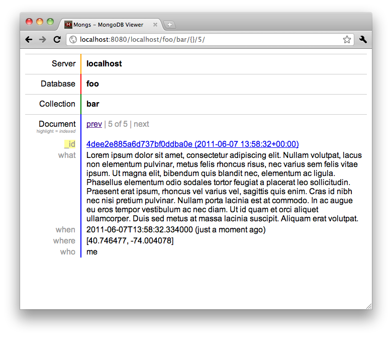

Mongs is a web-based data browser for MongoDB.
$ git clone https://github.com/whit537/mongs.git $ cd mongs $ make run Greetings program! Welcome to port 8080.
Click to browse.
For now you can query using JSON expressions in the URL, where the {} is above.
You can sort by adding a "sort": [["field", -1]]
key/val to the {} in the URL. It will be popped and the rest of the dict
will simply be a pymongo query.
To add more servers, create (or link) a servers.txt
file in the Mongs distribution root with one server per line.
Mongs is implemented in Python using the Aspen web framework.
Mongs is named after a dairy. Herewith, an old milk box repurposed to hold computer cables, showing the Mong's Dairy logo:
Copyright © 2010- Chad Whitacre and YouGov. MIT-licensed.